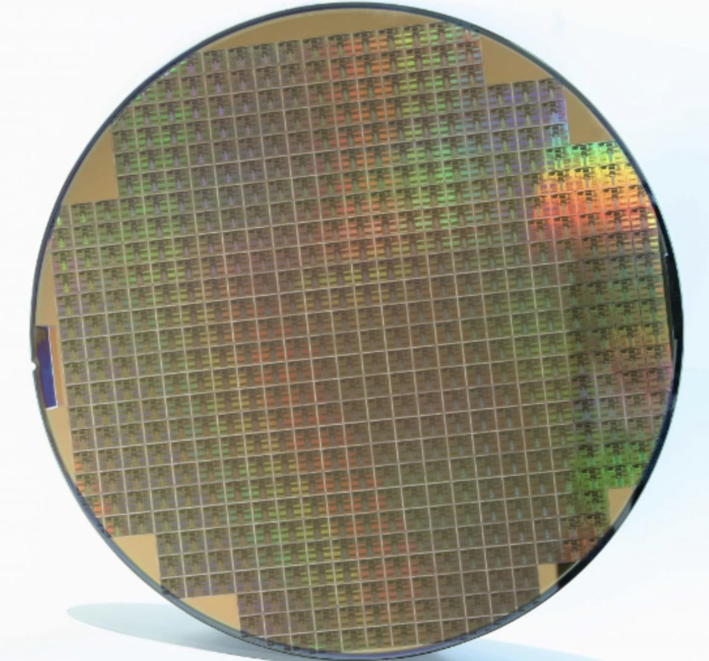

Silicon Jackets
A competitive club designing computer chips for production and testing, with a focus on mimicking the real world design process.
TLDR
What I learned:
- TCL file reading
- Cadence training
- Semiconductor 101 Certificate
- Familiarity with IC design Process

During the second semester of my first year at Georgia Tech, Silicon Jackets began to host interest meetings for prospective club members. After going to several meetings and completing the onboarding process, I joined Silicon Jackets' Physical Design team, focusing on turning our digital logic code into an integrated circuit for manufacture.
While joining Silicon Jackets has been an incredibly rewarding and eye-opening experience, it has also been daunting at times. As a first-year, I had very little experience in the world of physical design prior to joining the club, yet I was nonetheless tasked with working with individuals receiving a PhD in that very field. When they posed questions or raised ideas, I would often feel like I didn't belong and was not qualified to be there. I kept at it, however, and through countless questions and online lectures, I now have a greater understanding of what most members are saying, and even begin to question and pose ideas myself.
Integrated circuit design is the field of work I want to pursue in the future, and Silicon Jackets is an invaluable resource in gaining knowledge and experience for the subject. Each semester I stay in the club, the more I hope to learn and contribute to winning the chip design competition starting this fall.